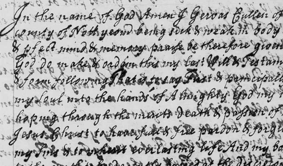

| Follow the above link to the directory for the archives or click the graphic below to visit the Homepage. |
 | Will of Gervase Cullen, Yeoman of Upton Will Written Oct 29, 1708 - Proved Dec 4, 1708 Jim Cullen |
Written Oct 29, 1708 & Proved Dec 4, 1708 In the name of God Amen I Gervas Cullen of Upton in y^e [the] county of Nott[ing]h[am] yeom[an] being sick & weak in body but of sound & p[er]fect mind & memory praise be therefore given to Almighty God do make & ordain this my last Will & Testam[en]t in maner & form following That is to say First & principally I comend my Soul into the hands of Almighty God my maker ~ hoping through the merits death & passion of my Saviour Jesus Christ to have full & free pardon & forgiveness of all my Sins & to inherit everlasting life And my body I comitt to the earth to be decently buried at the discret[i]on of my ~ Executrix hereafter named And as touching the disposic[i]on of such temporal estate as it hath pleased Almighty God to bestow upon me I give & dispose thereof as followeth Impr[imi]s [First] I give unto my eldest son Gervas Cullen and to his heires & assignes for ever half an acre of arable land upon Micklebarrow hill in the East field of Upton the land of Sam: Bettinson lying west thereof one half acre more upon the said Hill the land of Theophilus Gilbert lying west thereof and the heires of Richard Hobbins east In the Middle field I give unto him my said Son Gervas Cullen and to his heires & assignes for ever five selion [strips] of land near a place called Shelton headland containing by estimacon one acre the heires of Rich. Holmes lying west of them In the West field I give unto him the said Gervas Cullen and to his heires & assignes for ever one half acre of land upon a furlong called Blacklands the land of the heires of John Kitchen lying north one half acre more in the same field upon Short furlong near to the half mile Bush the Vicars land lying east thereof and the heires of John Kitchen west, one acre more in the same field upon Harehill the land of Theoph[ilus] Gilbert lying east thereof also one half acre more in Presting [?] the land of Robt Holmes lying south thereof Also I give unto him the said Gervas Cullen and to his heires & assignes for ever one acre & a half of meadow in a place called Greeting the land of M[rs] Oglethorp lying west thereof and the heires of Rich. Holmes east in full of his Childs part or porcon But my will is that he the said Gervas Cullen shall not enter to any of the forementioned lands untill he shall come to the age of one & twenty years anything before herein contained to the contrary notwithstanding Item I give unto my three Daughters Frances, Sarah & Mary Cullen & to their heires & assignes for ever nine acres of arable land to be equally divided amongst them when they shall all have attained the age of one & twenty years the p[ar]ticulars of w[hi]ch lands now follow That is to say First & foremost In the East field one Butt on the east side of a little cross hill Thomas Cullen lying east thereof also one Selion more upon Spring furlong the land of Widow Bilby lying east thereof both containing by estimacon half an acre one half acre more upon the said little cross hill the land of Wm Glew [?] lying west, one rood upon Middle furlong the s[ai]d middle furlong the land of Wm Robinson west thereof two Selions upon a place called Grey Buttocks containing by estimacon one rood & a half the land of M[rs] Oglethorpe lying south two Selions more going down to Charwell green containing by estimacon three roods the land of Tho: Cullen lying between them are Goar or Selion near those last mentioned containing by estimacon one rood the Vicars land lying west thereof and the heires of Rich: Holmes east In the Middle field two Selions of land at Shelton headland containing by estimacon one acre & a half the land of Theoph: Gilbert lying south of them Six Selions more upon the Short Cliff containing by estimacon one acre & a half the land of Wm Hudson lying south of them and the land of Gervas Cullen junior north In the West field two Selions lying together in the Walkmills containing by estimacon one acre & a half the land of Joseph Finlay [?] lying both east & west of them one half rood in Presting the land of Robt Holmes lying north thereof and one Selion more in the s[ai]d Presting containing by estimacon three roods the land of M[rs] Oglethorpe lying south thereof and the land of John Kirk north Item I give unto my loving wife Theodosia Cullen for & during her natural life and after her decease to my son John Cullen the Cottage house formerly in the occupation of Harold Graves with the Croft thereunto belonging as far as the ancient Dimensions together with half an acre of arable land at Hobersdale in the East field also one Selion of land lying east of those six at Wymondesold close containing by estimacon half an acre and one half acre more in the West field at a place called Harehill the land of M[r] Truman lying east thereof Item I give unto my youngest son John Cullen and to his heires & assignes for ever my Dwelling house and the Close thereunto adjoining w[i]th all the houses standing thereupon and also all other my lands meadow & pasture whatsoever as yet undisposed of by this Will when he shall have attained the age of one & twenty years Provided that my wife happen to live so long And in case she die before he shall come to the said age of one & twenty years Then for him the said John to enter immediately after her decease All the rest & residue of my p[er]sonal estate goods & chattels whatsoever I do give & bequeath unto my said Wife Theodosia Cullen and do ~ hereby make her the full & sole Executrix of this my ~ present last Will & Testam[en]t and I do hereby also order her to pay all my Debts & Funeral charges & to maintain my Children till they come to the aforesaid ages And lastly I do hereby revoke disannul & make void all former Wills & Testam[en]ts by me heretofore made In witness whereof I have hereunto set my hand & seal this twenty ninth day of October in the year of o[u]r Lord Christ 1708. The mark of Gervas [GC] Cullen Signed sealed published & declared in the p[re]sence of Tho: Cullen [jur], Gervas Cullen, Mord[ecai]: Hilton.< |
 | This is a just a portion of the image of Gervase Cullen's will from 1708. |